捷报比分网界面与系统能力调研
观察日期：2026-10-26 证据等级：A 为可直接复核的官方页面或发布文档；B 为本次浏览器/HTTP 观察；主观判断会单独标明。
结论
捷报比分网值得作为赛事信息密度、导航层级和专家内容组织的主要参考。桌面首页把足球/篮球/AI预测/竞彩/资料库/会员放在一级导航，并将前瞻文章、赛事数据和作者排行并列；手机版改用体育切换、即时/直播/赛程/资料/AI预测二级导航，以及比分/预测/前瞻/捷报猫/我的底部导航；会员页是独立的权益与套餐转化区；赛事页围绕单场对阵组织让球分析和指数内容。
这意味着 v2.0 应学习其“比分发现 → 比赛详情 → 专家内容 → 会员权益 → 个人中心”的浏览路径，并统一赛前与滚球赛事的筛选方式。不能把捷报的推荐结论、作者文章、Logo、球队图片或未授权静态资源复制进新产品。本项目会匹配其信息层级和响应布局，使用原创品牌、文案与授权素材。
页面观察
视觉证据
以下截图由 Playwright 在观察日期获取，供布局研究；截图内容仍属于原站。实现时只引用其布局，不将原站图片作为新产品静态资源。
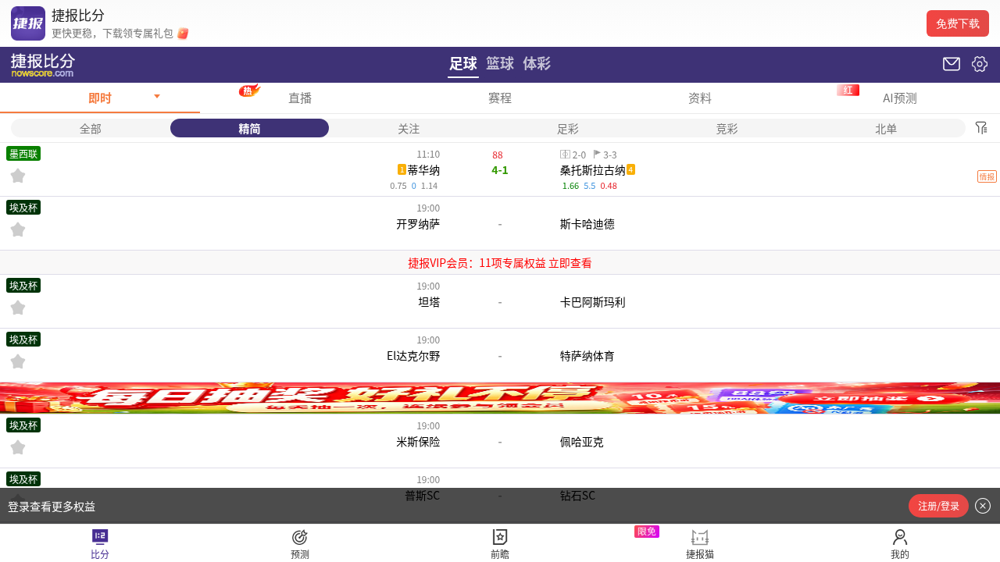
本次浏览器观察记录：首页标题为“足球比分_篮球分析_比分直播_足球比分直播 – 捷报比分网”；桌面页面包含前瞻/分析内容、联赛/赛事入口与作者排行。桌面截图首屏被计划单推广弹层覆盖，说明促销是可能出现的页面状态，但该弹层遮挡了主体内容，v2.0 不应照搬其遮挡式体验。移动版 390×844 实际截图显示了完整比赛行、会员横幅、登录权益条和比分/预测/前瞻/捷报猫/我的五项底栏。早先一次移动抓取出现“数据加载中”提示；另一时点成功加载，说明抓取结果具有时变性，不把单次超时写成常态。
会员页截图实际显示 VIP 主视觉、月/季/年套餐卡、开通按钮和权益列表入口。价格会随运营变化，因此不复制价格；v2.0 套餐由管理员配置。
方案对比矩阵
表中“直接观察”是页面结构的可见事实；“主观评分”是本次实现参考价值判断，不是产品性能或覆盖率测量。成本/授权风险是项目侧评估，未做源站压测。
流程映射
查看可审阅的 Mermaid 源码
flowchart LR
A[选择足球或篮球] --> B[选择日期、联赛或关注项]
B --> C[查看赛前与滚球比赛列表]
C --> D[打开单场详情]
D --> E[查看系统盘口、比分和新鲜度]
D --> F[查看专家消息与明确推荐]
F --> G[查看专家历史与一单位收益]
G --> H[会员权益或个人中心]
H --> I[用户本人绑定乐鱼账户]
I --> J[显式启用并受限的自动投注]
可复核来源
研究限制
浏览器和 HTTP 页面观察可复核；早期一次移动请求未载入比赛，后续390宽截图已经成功加载，二者分别保留记录。网页源站和会员套餐持续变化，截图与导航结论仅代表 2026-10-26 的观测。对比表中的实现成本、信息密度和授权风险均为主观工程判断。正式发布前需复核数据展示权、赛事图标授权、会员/支付规则及目标域名的访问行为。
2026-10-26 补充采样与实现对照
本轮 Docker 浏览器重新访问官方桌面比分、桌面首页和手机比分，退出码均为0。手机视口明确为390×844，桌面为1440×960。旧的“移动截图”实际宽1280，只保留为较宽视口证据，不能再作为390宽度验收图。新手机截图成功加载比赛列表；原文“移动数据区未成功加载”仅对应早期某次请求，不能代表最终观察。
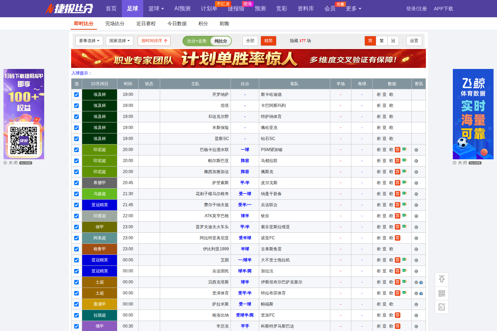
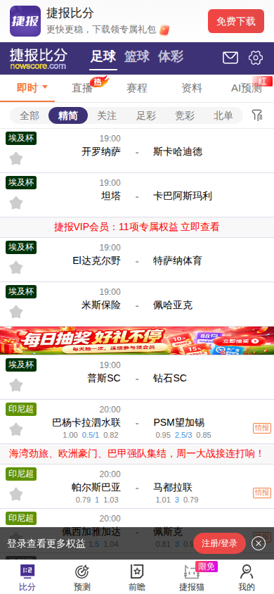
以下为隔离固定样本的候选实现截图，所有球队、专家、收益和时间均为浏览器测试样本，不能作为生产数据或盈利证据：
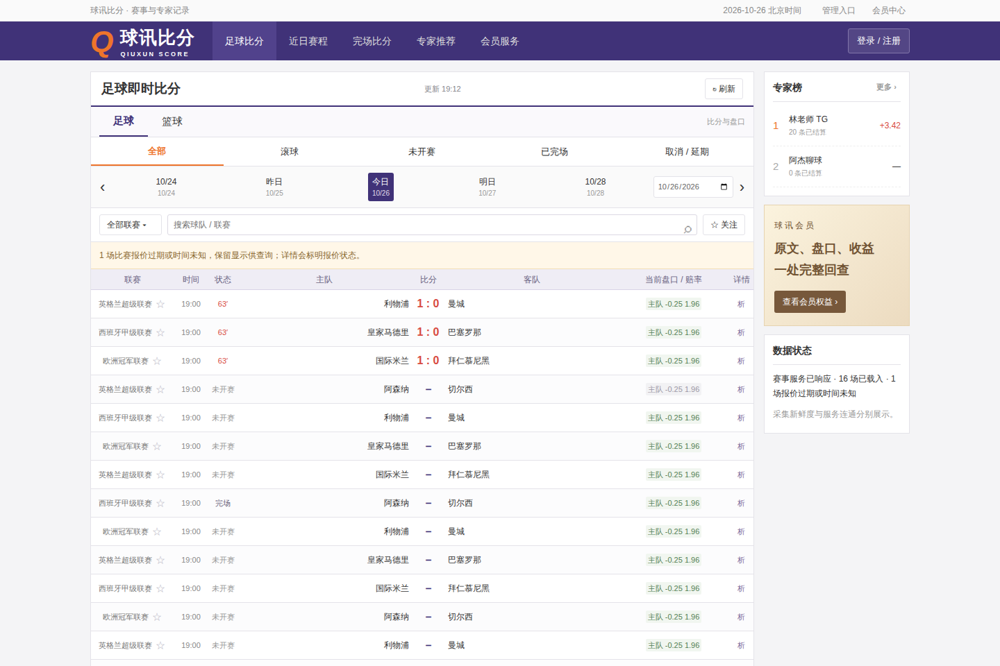
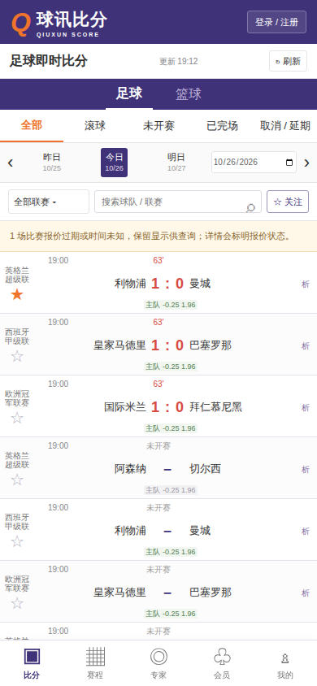
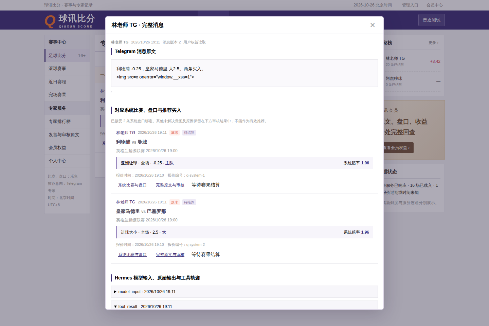
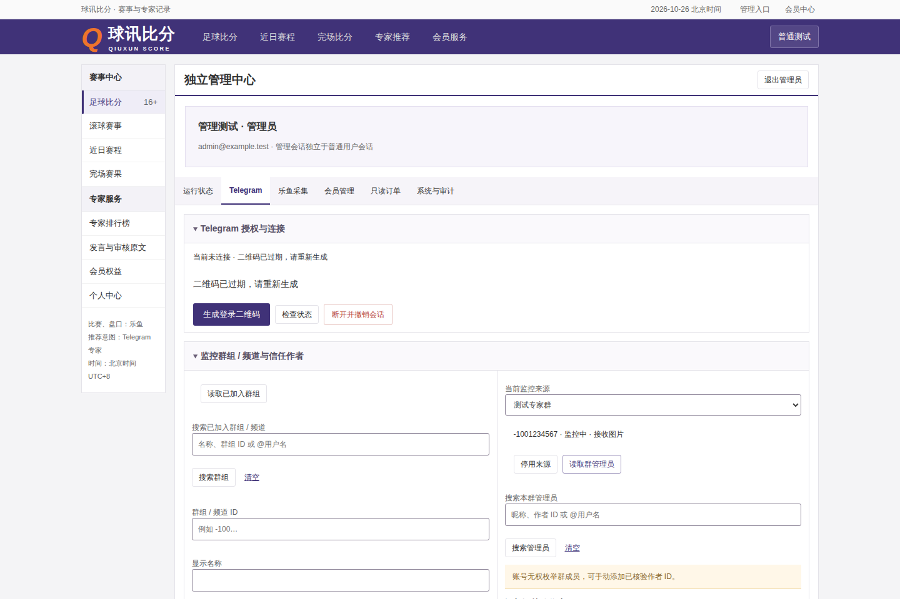
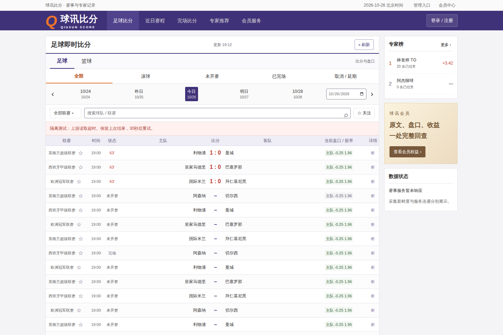
原站资源依赖已经单独记录在资源清单中，授权未确认的品牌、文章、广告、球队图及样式均未打包进产品。生产页面的品牌、装饰和图标由代码构成；二维码库保留MIT版权声明。此次实现匹配已观察的信息层级和布局规则，不宣称所有页面像素完全一致。
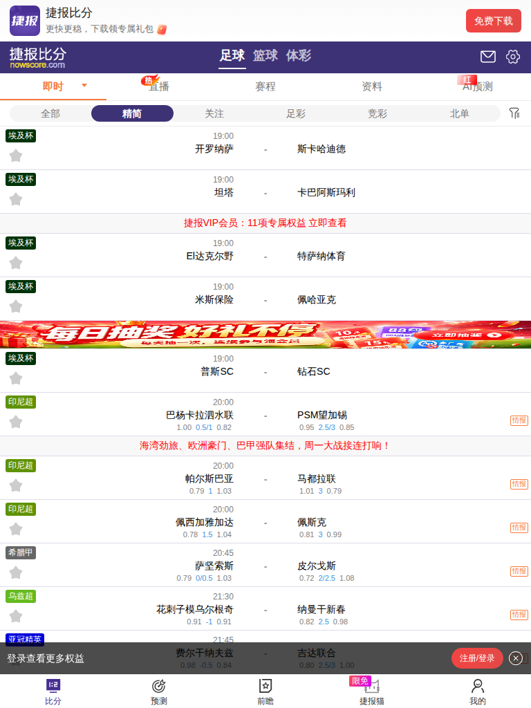
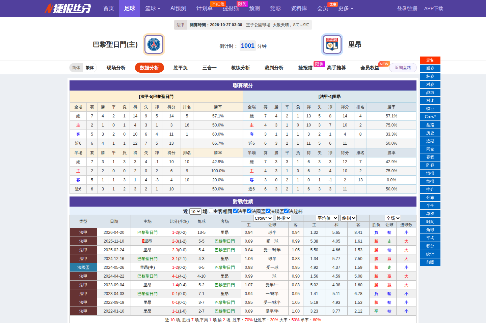
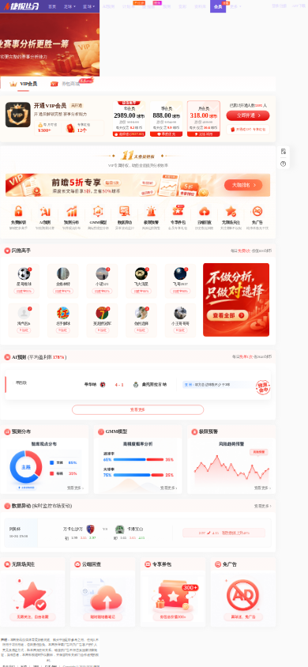
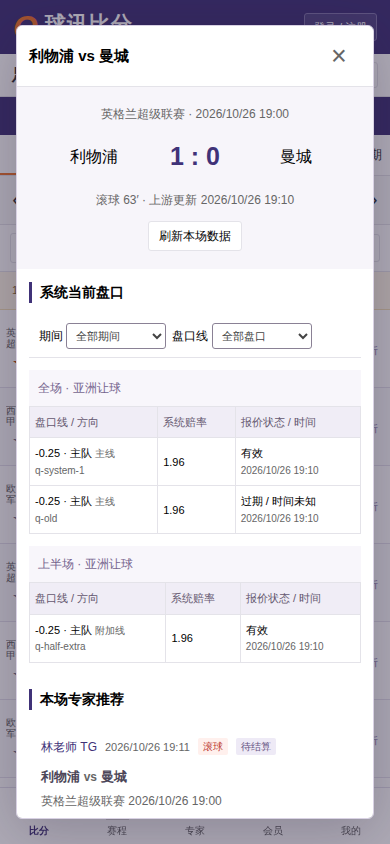
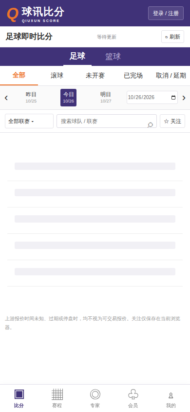
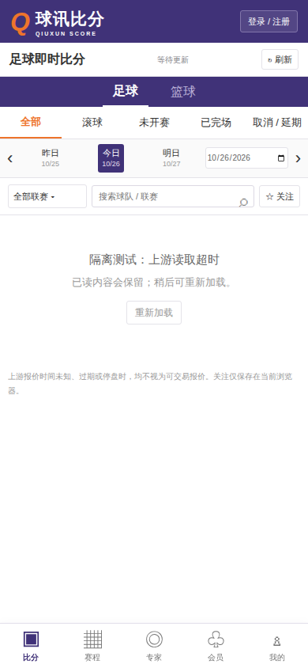
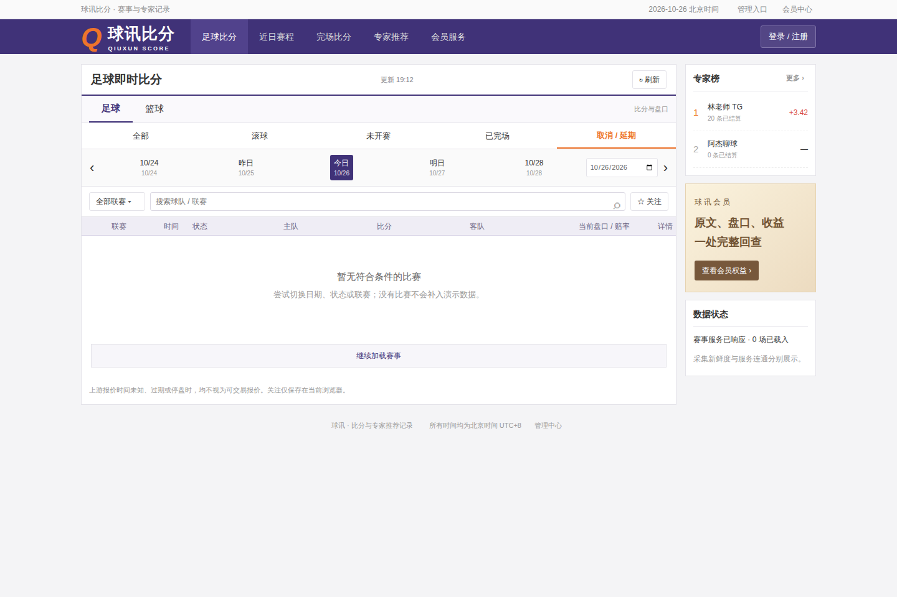
正式差异：原站存在AI预测、购彩内容、文章及广告，本平台只保留专家业务；原站昵称、头像、盈利宣传和付费价格均不进入生产样本。未观察到的原站错误重试行为不作推测，本平台按已验证的读取超时和旧内容保留要求自行实现。
桌面复核已修正早期候选的联赛列过窄：原77宽及57文字限制改为120列宽/100文字宽，时间、状态、比分列相应收紧，完整title作为长名称补充。上方候选截图由最新隔离浏览器重生成；40高比赛行保留，与原站约32高的差异明确存在。浏览器验收另覆盖360、390、768、1280、1440宽，不用原站某个更宽视口冒充手机证据。
界面验证分两类：HTTP Mock覆盖状态、故障和并发竞态；隔离真实API联调用当前构建、任务专属临时PostgreSQL及人工样本验证身份、会员、原文和账户排队。二者均不接真实账户和资金。远端生产新鲜度、模型、TG和S3授权图片仍需单独真实联调，不能从上述截图推导已上线或盈利。
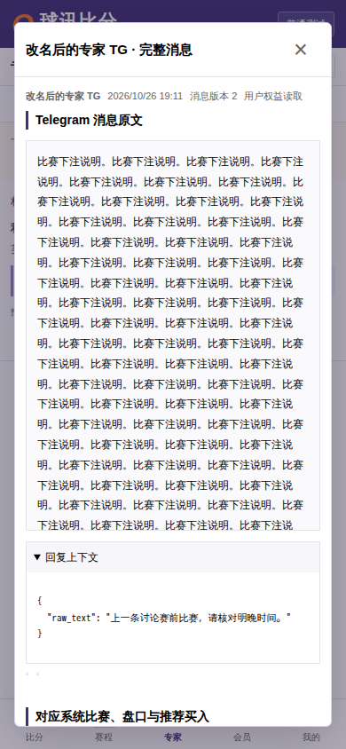
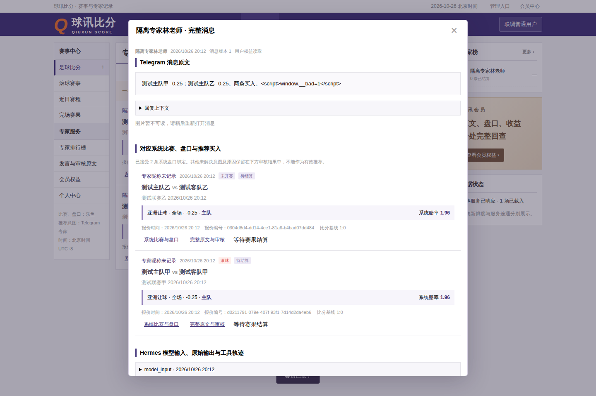
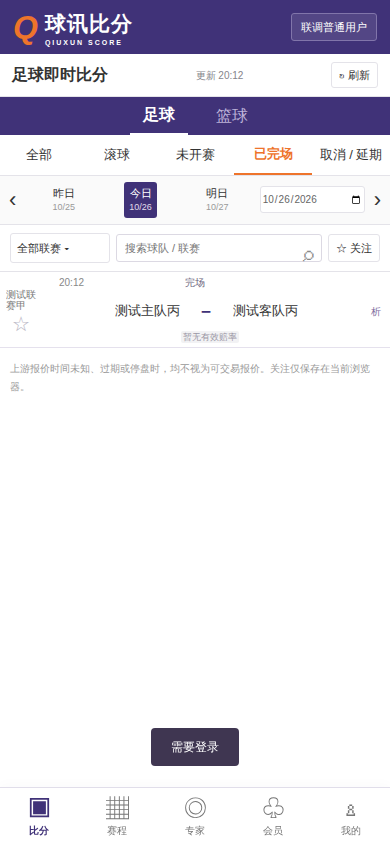
基础网页阶段HTTP Mock 22项及隔离真实API 10项均通过，退出0。新增真实链路涵盖本人资料导出、人工恢复码重置后登录、管理员一次性恢复码、只读运维和注销撤销会话。媒体S3未配置的503在结果中单列；以上图片来自样本浏览器，不是生产截图。随后独立阶段补管理员验证器换机与手机独立管理入口，最新完整Mock24项及真实API11项也均通过，退出0。新密钥和备用码未进入报告截图，仍只使用人工隔离管理员进行验证。